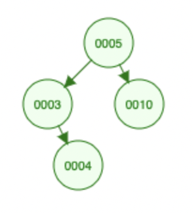

Binary Search Trees
Contents
Binary Search Trees¶
As we mentiones in the introduction, Python does not use Binary Search Trees in any of its abstract data types.
Here we include a program for the implementation that is described in the book Algorithms Illuminated in chapters 11.1, 11.2 and 11.3 from part 2. The website includes four videos with explanations.
The implementation is borrowed from the website of another book: Introduction to Programming in Python by R. Sedgewick, K. Wayne and R. Dondero, chapter 4.4.
In order to understand why we used the names that we used for the methods of the class, check the comments in the little application in the cell immediately after the implementation.
The workings of this (very naive) implementation can be visualized in Binary Search Tree
# An ordered dictionary implemented as binary search trees
# (keeps keys in order)
# as implemented in the book Introduction to Programming in Python
class ordered_dict:
#-------------------------------------------------------------------
# Construct a new ordered_dict object.
def __init__(self):
self._root = None # Reference to root _Node object
#-------------------------------------------------------------------
# Search the subtree of self whose root is x for a _Node object
# with the given key. If found, return that _Node object's value;
# otherwise raise a KeyError.
def _get(self, x, key):
if x is None:
raise KeyError
if key < x.key:
return self._get(x.left, key)
elif x.key < key:
return self._get(x.right, key)
else:
return x.val
# Return the value associated with key in self.
def __getitem__(self, key):
return self._get(self._root, key)
#-------------------------------------------------------------------
# x is the root of a subtree self. If a _Node object with
# the given key exists in that subtree, then set its
# value to val. Otherwise insert a new _Node object consisting
# of the given key and val into the subtree. Return the root of
# the resulting subtree.
def _set(self, x, key, val):
if x is None:
return _Node(key, val)
if key < x.key:
x.left = self._set(x.left, key, val)
elif x.key < key:
x.right = self._set(x.right, key, val)
else:
x.val = val
return x
# Associate key with val in self.
def __setitem__(self, key, val):
self._root = self._set(self._root, key, val)
#-------------------------------------------------------------------
# Search the subtree of self whose root is x for a _Node object
# with the given key. If found, return True; otherwise return
# False.
def _contains(self, x, key):
if x is None:
return False
if key < x.key:
return self._contains(x.left, key)
if x.key < key:
return self._contains(x.right, key)
return True
# Return True if key is in self, and False otherwise.
def __contains__(self, key):
return self._contains(self._root, key)
#-------------------------------------------------------------------
# Populate list a with all keys in the subtree of self whose
# root is x.
def _inorder(self, x, a):
if x is None:
return
self._inorder(x.left, a)
a += [x.key]
self._inorder(x.right, a)
# Return an iterator for ordered_dict object self.
def __iter__(self):
a = []
self._inorder(self._root, a)
return iter(a)
#-----------------------------------------------------------------------
# A _Node object references a key, a value, and left and right
# children _Node objects. An ordered_dict object is composed of
# _Node objects.
class _Node:
def __init__(self, key, val):
self.key = key # Reference to key
self.val = val # Reference to value
self.left = None # Reference to left child _Node object
self.right = None # Reference to right child _Node object
What follows is an example where we use the ordered dictionary.
# using ordered_dict calls __init__
phoneNumbers = ordered_dict()
# assigning a value to the ordered dictionary at a key uses __setitem__
phoneNumbers['vero'] = 123
phoneNumbers['martin'] = 456
phoneNumbers['tim'] = 789
# accessing the ordered dictionary at a given key uses __getitem__
print(phoneNumbers['martin'])
# testing whether a key is in the ordered dictionary using in uses __contains__
if 'anna' in phoneNumbers:
print(phoneNumbers['anna'])
else:
phoneNumbers['anna'] = phoneNumbers['tim']
print(phoneNumbers['anna'])
# iterating over the keys uses __iter__
for key in phoneNumbers:
print (key, phoneNumbers[key])
456
789
anna 789
martin 456
tim 789
vero 123
If you run this code you will see that the contents of the dictionary is printed in order (of the keys). No matter in what order the items were added, they appear sorted.
It is enough to change the first line so that instead of creating an ordered_dictyou create a dict to see that the output is not ordered: hash tables (the data structure used to implement dict) does not keep an order among the items in the collection.
Counting words (again!)¶
We do the same trick of modifying the program for counting the words in a file to use the binary search tree implementation of a dictionary (ordered_dict) and check the output:
# This is the same program as word_count but using an
# ordered_dict instead of a dict.
# As you can see the resulting output file is ordered!
import re
def word_count_sorted(input_file, output_file):
f = open(input_file, 'r')
txt = f.read()
f.close()
text = re.findall(r"[a-zA-Z']+", txt)
# Now to the algorithm: just lookup and update words in the dict
# (implemented with a binary search tree.
# In our example the keys are words and the values are the count.
counts = ordered_dict()
for word in text:
w = word.lower()
if w in counts:
counts[w] += 1
else:
counts[w] = 1
f = open(output_file,'w')
# write one (word, count) at a time
len = 0
for word in counts:
f.write(word + ' '+ str(counts[word]) + '\n')
len +=1
f.close()
return len
word_count_sorted('tomsawyer.txt', 'tomsawyer.counts')
---------------------------------------------------------------------------
FileNotFoundError Traceback (most recent call last)
/var/folders/82/jclchxtc8v5c1z006s6fwjm9v2lh42/T/ipykernel_31100/2275969890.py in <module>
----> 1 word_count_sorted('tomsawyer.txt', 'tomsawyer.counts')
/var/folders/82/jclchxtc8v5c1z006s6fwjm9v2lh42/T/ipykernel_31100/1418562632.py in word_count_sorted(input_file, output_file)
6 def word_count_sorted(input_file, output_file):
7
----> 8 f = open(input_file, 'r')
9 txt = f.read()
10 f.close()
FileNotFoundError: [Errno 2] No such file or directory: 'tomsawyer.txt'
Quiz¶
What is the Big-O for your program? Can you argue for it?
Exercise¶
Modify the implementation of ordered_dict by adding a function min that returns the (key,value) for the minimum key. What is the Big-O for the execution time?
Exercise¶
Modify the implementation of ordered_dict by adding a function max that returns the (key,value) for the maximum key. What is the Big-O for the execution time?
Exercise¶
Modify the implementation of ordered_dict by adding a function height that returns the height of the tree. Use this method to calculate the height of the tree constructed to count the words in Tom Sawyer.
The height of a tree is the number of edges from the root to the deepest leaf. The height of a binary search tree with only one node is 0. In the binary search tree
the height is 2: the number of edges from the root (5) to the deepest leaf (4).
Exercise¶
What could you do if you wanted the output to be sorted by the count instead of by the word? What is the Big-O of your solution?